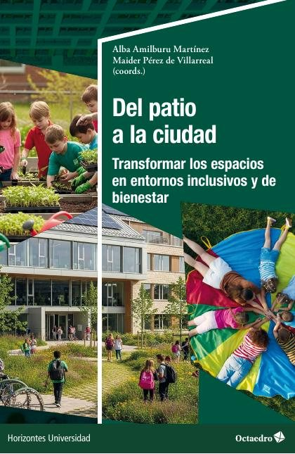
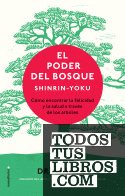

Libros de psicología ambiental
Libros de psicología ambiental en español: 3 libros completos para leer gratis aquí mismo y 2 fichas de títulos actuales.
Del patio a la ciudad: transformar los espacios en entornos inclusivos y de bienestarAmilburu Martínez, Alba Jara, ed. lit.; Pérez de Villarreal Zufiaurre, Maider, ed. lit.
Del patio a la ciudad: transformar los espacios en entornos inclusivos y de bienestarAmilburu Martínez, Alba Jara, ed. lit.; Pérez de Villarreal Zufiaurre, Maider, ed. lit.
Programas nacionales de ciudades y comunidades amigables con las personas mayores. Una guía
Programas nacionales de ciudades y comunidades amigables con las personas mayores. Una guíaPsicología de la ciudadFernández Ramírez, Baltasar; Vidal, Tomeu
Psicología de la ciudadFernández Ramírez, Baltasar; Vidal, TomeuEl silencio en la era del ruidoErling Kagge
El silencio en la era del ruidoErling KaggeEl poder del bosqueQing Li
El poder del bosqueQing Li
Temas relacionados
¿Estás eligiendo carrera?
Haz gratis el test de orientación vocacional de AURZANE: intereses, aptitudes, autoconcepto y hábitos de estudio, con informe completo.